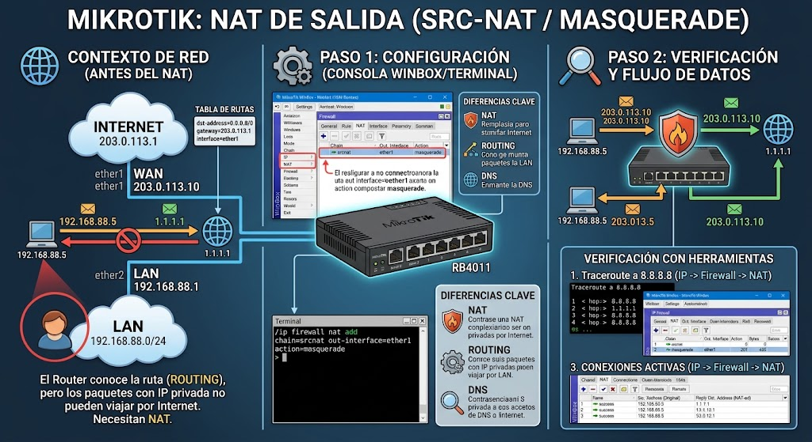
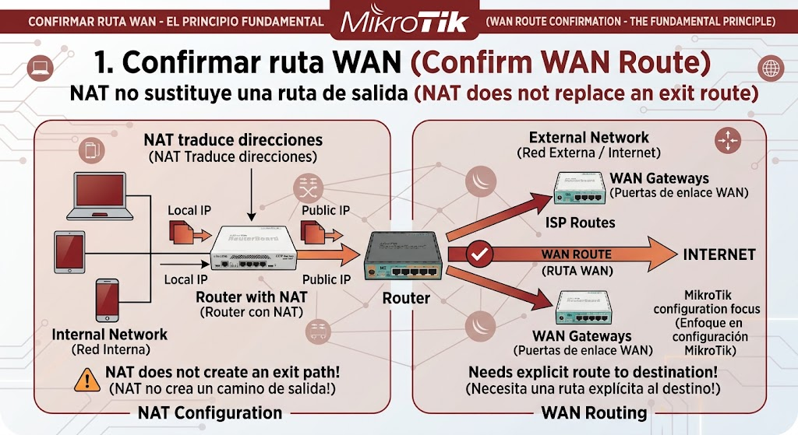
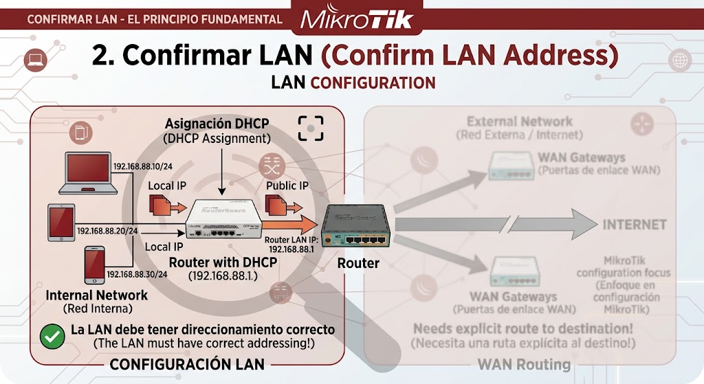
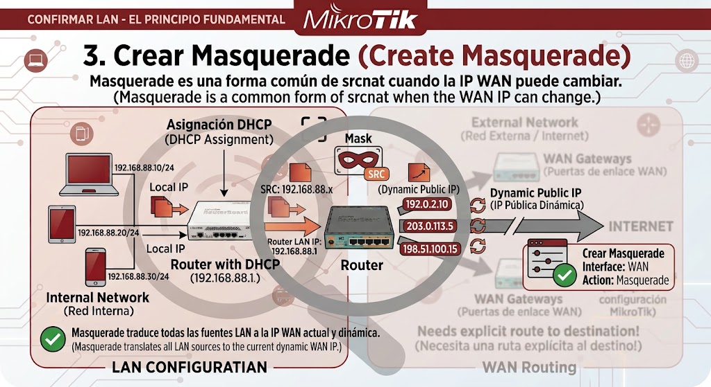
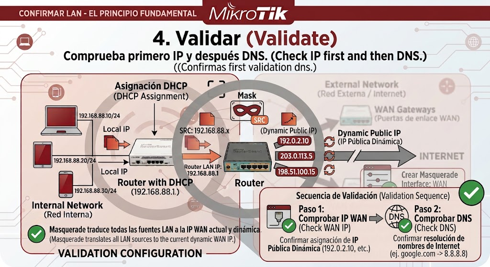

Introducción

Configura y verifica srcnat/masquerade sin confundir NAT con routing o DNS. La guía busca que puedas separar causas antes de sustituir componentes.
Antes de empezar: seguridad
Desconecta el equipo cuando corresponda y no realices mediciones peligrosas sin formación e instrumental. En baterías, fuentes y placas, detén el procedimiento si detectas daño físico, líquido, olor extraño o calor anormal.
- Documenta el estado inicial.
- Haz una sola modificación cada vez.
- Conserva tornillos, cables y configuración original.
Herramientas
1. Confirmar ruta WAN
NAT no sustituye una ruta de salida.

/ip route print detail/ip dhcp-client print detailLista las rutas que el router conoce. Para salir a Internet debe existir una ruta "0.0.0.0/0" (ruta por defecto); si no aparece, el router no sabe hacia donde mandar el trafico que no es de su propia red. Muestra si el propio router esta recibiendo IP por DHCP en su interfaz WAN (tipico al conectarse a un modem/ISP). "status: bound" significa que ya obtuvo IP, gateway y DNS del proveedor; cualquier otro estado indica que el router no ha logrado conectarse.
2. Confirmar LAN
La LAN debe tener direccionamiento correcto.

/ip address print detail
/interface bridge print detail/ip address print detailLista las direcciones IP asignadas a cada interfaz. Confirma que la IP se creo correctamente y que no choca con otra direccion ya existente en la red.
3. Crear masquerade
Masquerade es una forma común de srcnat cuando la IP WAN puede cambiar.

/ip firewall nat add chain=srcnat action=masquerade out-interface-list=WAN comment="LAN -> Internet"/ip firewall nat print detailLa regla que permite que TODA la LAN salga a Internet compartiendo una sola IP publica (NAT / masquerade). Sin esta regla, los paquetes salen con una IP privada y el proveedor de Internet los descarta. Confirma que la regla de NAT existe, esta activa y tiene la accion "masquerade".
Qué hacer
- Aplica "out-interface-list=WAN" apuntando a la lista de interfaces WAN real de tu router, verificable con
/interface list member print. - No escribas el nombre de una interfaz que no existe o que pertenece a otra lista: la regla se crea sin error pero nunca traduce ningún paquete.
- Tras crearla, genera tráfico real desde un cliente y revisa que el contador de la regla suba.
Masquerade es una forma común de srcnat cuando la IP WAN puede cambiar (por ejemplo, con IP dinámica del proveedor); si tu IP pública es fija, también puedes usar "action=src-nat to-addresses=" con la IP exacta.
InterpretaciónContador de la regla incrementa con tráfico de la LAN → NAT funcionando, continúa al paso 4. Contador en cero pese al tráfico → revisa que la interfaz WAN esté correctamente en esa lista.
4. Validar
Comprueba primero IP y después DNS.

/ip firewall nat print stats
/ip firewall connection print/ip firewall nat print statsMuestra cuantos paquetes ha traducido esa regla de NAT. Un contador en cero sugiere que el trafico no esta pasando por ahi -revisa que "out-interface-list=WAN" apunte a la interfaz correcta-.
Qué hacer
- Haz ping a una IP pública (1.1.1.1) desde un cliente de la LAN, no desde el router mismo.
- Si el ping funciona, prueba después resolver un dominio en el navegador del cliente.
- Si el ping por IP funciona pero el dominio no carga, el problema es de DNS, no de NAT: no sigas modificando reglas de NAT o firewall.
Comprueba primero IP y después DNS: probar en ese orden evita perder tiempo ajustando NAT cuando el problema real está en la resolución de nombres.
InterpretaciónPing y dominio funcionan desde el cliente → NAT configurado correctamente de punta a punta. Ping funciona pero el dominio no → revisa la guía de DNS, el NAT ya está confirmado como correcto.
Diagnóstico final
Fuentes y notas
La documentación oficial de RouterOS explica srcnat como traducción de la dirección de origen y documenta masquerade como una modalidad habitual cuando la IP de salida es dinámica. Sustituye ether1 por tu WAN real.